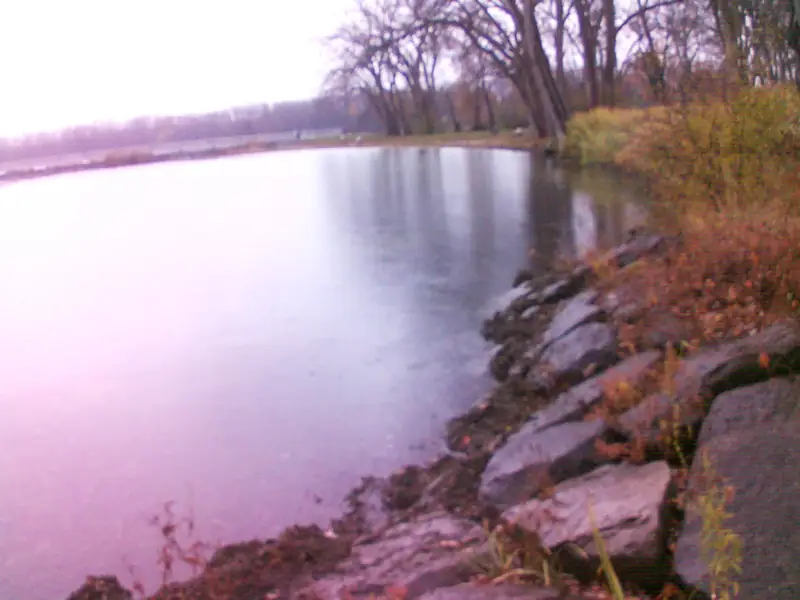
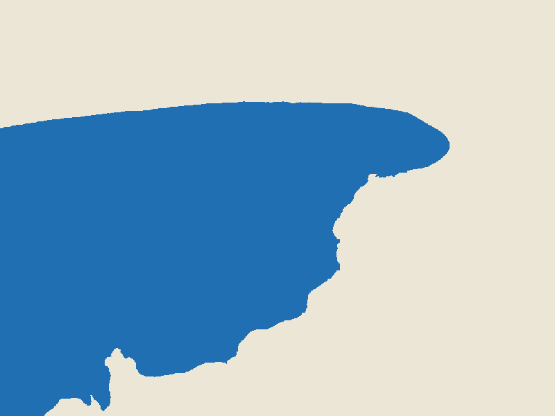

Why these sensors are useful
Flooding in towns and along small streams is often fast and local. Rain gauges measure how much rain falls, river gauges measure one point on large rivers, and satellites see large regions but can't see through the clouds that come with storms. Very little measures how far water spreads, street by street, field by field, as it happens.
-
Sees the flood
Each sensor records how much of the area it watches is underwater, including when roads and riverbanks are first going under.
-
Works through a storm
It runs on solar power and sends its reports using long-range radio or its cellular modem. Floods often cut electricity and internet service, but the sensor doesn't require either.
-
Sensors warn each other
When one sensor detects flooding, any nearby sensors start reporting more often until the water level goes down.
-
Flood maps
Each sensor's view is matched to map coordinates, so its results become a flood map that planners can use.
-
Better planning
A record of where water goes and how fast helps target drainage repairs, validate flood forecasts, and plan roads, drains, and other infrastructure.
-
Open and low cost
The hardware and software are open source and use off-the-shelf parts, so communities and agencies can build and use their own.
Privacy
The sensor is used only to measure flooding. Each one is aimed at an area that might flood, such as a stream bank, a drainage channel, or a low spot, and positioned so that homes, windows, and footpaths are out of view whenever possible. What it sends out is a simple map of where water is, plus information about its own health.


- Water
- Not water
How photos are handled
- Photos are not part of the regular reports. The sensor works out where the water is on its own and sends only the result.
- Photos are deleted automatically from the sensor at regular intervals.
- A few photos may be saved for research. Researchers may keep photos that do not show people, vehicles, license plates, homes, or anything else that could affect someone's privacy. These photos are used only to improve flood detection. They are collected in person or over an encrypted connection, and only approved members of the research team, using multi-factor authentication, can access the sensors.
| Data | Sent? | Details |
|---|---|---|
| Water map | Yes | A grid of water / not-water cells. It contains no picture detail: no faces, colors, or text. |
| Temperature and humidity inside the box, battery level | Yes | For checking the sensor's health. |
| Tilt | Yes | How far the box has tilted since it was installed, so we can tell if it has been moved or knocked. |
| Sensor's own location | Yes | The position of the box, so the water map can be placed on a map. |
| Photos | No | Not part of the regular reports. Photos are deleted from the sensor automatically, and researchers may save a few that do not show people, vehicles, license plates, or homes. |
| Information about phones or other devices nearby | No | The sensor does not scan for or log phones, Wi-Fi, or Bluetooth devices. |
An example report
These values come from a single report sent by unit UFO-006 on November 10, 2026. Some readings, such as the position of the box, are left out of this example.
| Reading | Value |
|---|---|
| Share of the view that is water | 46% |
| Temperature inside the box | 53 °F (11.5 °C) |
| Humidity inside the box | 57% |
| Low-power warning | None |
| Water map | Like the one shown above |
If you found a sensor
- Please don't move, open, or cover it. Keep the solar panel and the camera window clear. The box is sealed against weather, and opening it can let water in.
- It is safe. It runs on a small rechargeable battery charged by its solar panel. It is not connected to the power grid and has no hazardous parts.
- Tell us if something is wrong: if it is damaged, has fallen, is in the way, or is about to be swept away by high water. Note the unit number on its label. It starts with UFO, for example
UFO-005. See Contact.
If you are the property owner and want it moved or removed, contact us and we will take care of it.
Hosting a sensor on your property
We look for places that flood: a stream bank, a retention pond, a drainage channel, or a low area of a parking lot or field.
What it needs from you
- A mounting spot with a clear view of the area and a few hours of sun on the solar panel, such as a post, fence, wall, or tree. The box is at most 8 × 8 × 5 inches (20 × 20 × 13 cm). The solar panel is about 17 × 11 inches (44 × 27 cm).
- Nothing else. It needs no power or internet connection and runs on its own. Wi-Fi is used only if you choose to offer it.
- Occasional access for us to check or service it, arranged with you in advance.
What you can expect from us
- A site visit first. We agree on the exact location and the direction the sensor points, and you can see what it sees before we finish.
- A non-damaging temporary installation with zip ties or pipe clamps.
- A clear label or QR code on the unit pointing to this page, so neighbors and passers-by know what it is.
- Access to your sensor's data. You can have its water maps, readings, and any photos saved for research. You also get a viewer account on our online dashboard that shows the sensor readings at your location.
- Removal on request, at any time and for any reason.
- We maintain the equipment. There will be no work on your part.
Questions
Is it recording me?
No. It watches an area that might flood and only captures data for a minute or two periodically during the day. What it sends is a water / not-water map plus readings about its own condition, such as the temperature inside the box. Photos that show people are discarded and never leave the device. See Privacy.
Is it a security camera, or does it stream video?
No. It takes still images only when it wakes up, does not record or stream video, and its regular reports contain no photos.
Will its radio interfere with my Wi-Fi, phone, or other devices?
No. It primarily uses long-range radio on the 915 MHz band that's open for low-power devices (the same kind used by utility meters and farm sensors), with Wi-Fi (only with prior approval) or its own cellular plan as a backup. Each transmission is a short burst of well under a second.
Why does it matter if it gets moved a little?
Each sensor's view is measured and matched to map coordinates when it is installed. Turning or tilting it shifts every later water map, so the readings stop lining up with the ground.
What happens at night?
It is switched off overnight and wakes again in the morning. The wake times follow sunrise and sunset at its location.
Who runs this project?
HazMapper sensors are part of the Urban Flood Observation Network (UFONet), a research project at Syracuse University funded by the U.S. Geological Survey (USGS).
Can I see how it works?
Yes. See How it works below. The sensor's software and build guide are also open source: the project's source code on GitHub.
Contact
To report a problem with a sensor, ask a question, or talk about hosting one:
Contact the HazMapper sensor team (opens a Microsoft Forms page). No sign-in is needed.
If you are writing about a specific sensor, please include the unit number from its label.
How it works: technical details
Most of the time the sensor is switched off. During daylight it wakes for a minute or two, takes its readings, sends a short report, and shuts down again. With the current settings it reports about once an hour. If it detects flooding, it reports every 10 minutes, and nearby sensors switch to every 30 minutes.
-
Looks at the area
A regular camera with a near-infrared mode and a low-resolution thermal camera (160 × 120 pixels) point at the same view. Each sees water differently, which makes detection more reliable in glare, shade, and murky conditions.
-
Works out what is water
A small computer inside the box runs a trained image segmentation model that marks which parts of the scene are water. That map is the main result.
-
Sends a tiny report
The water map is compressed into a small file and sent over long-range, low-power radio (LoRa), the sensor's main link. Only if LoRa is unavailable does the sensor use its cellular modem, or Wi-Fi where the host offers it, as a backup. These backup links can carry a more detailed version of the map.
-
Looks after itself
It also reports the temperature and humidity inside the box, its battery level, its tilt, and its GPS position, so we can tell it is working without visiting it.
How data flows through a sensor
- On the sensorPhotosof the area, deleted automatically at regular intervals
- On the sensorImage modelmarks what is water
- Sent by radioWater mapwater / not water, a small file
- Research serverResultswater extent over time, flood alerts, sensor health
The regular reports carry only the water map and sensor readings.
Security
Reports to our server are authenticated and encrypted, and remote maintenance access is limited to the research team over an encrypted private network.